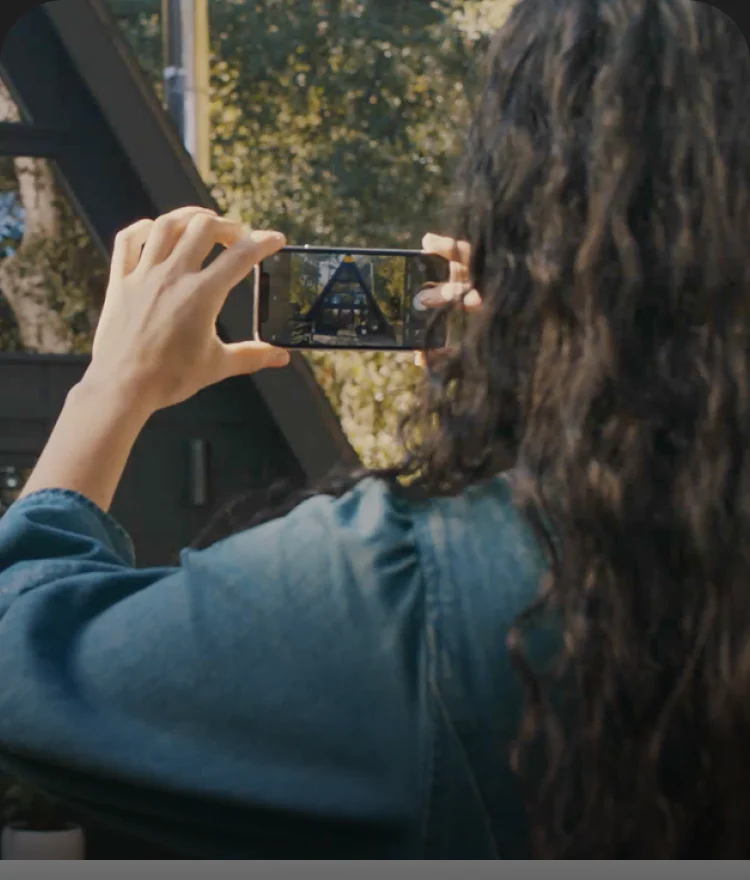
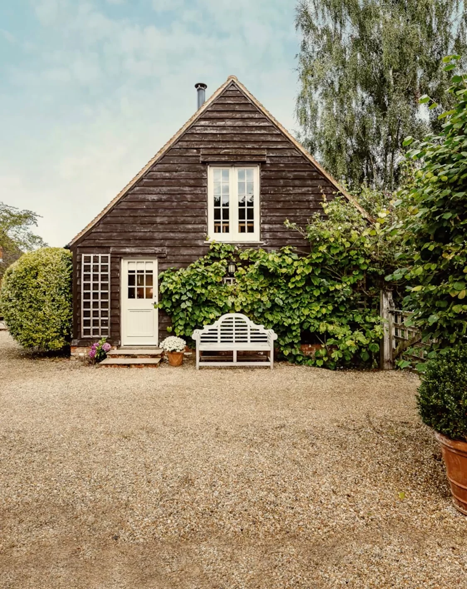
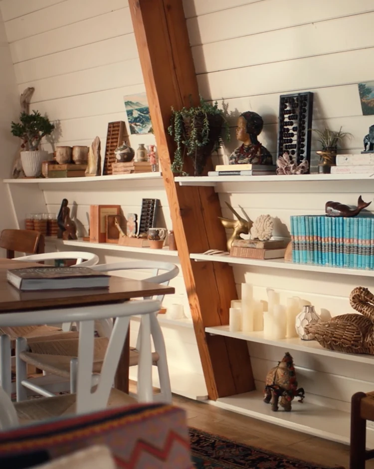
This listing will be visible to guests 24 hours after you publish.
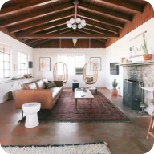
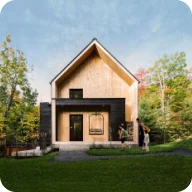
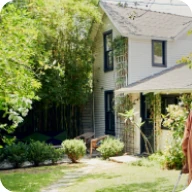
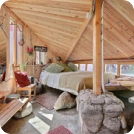
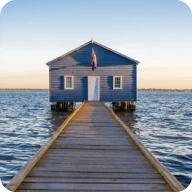
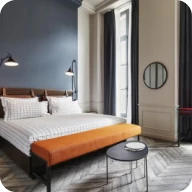
A converted space in a building used at any time for grain, livestock, or farming.
A single-level house with a wide front porch and a sloping roof.
A house made with natural materials like wood and built in a natural setting.
A cozy house built in a rural area or near a lake or beach.
A stand-alone house that’s usually less than 400 square feet.
A private room in a home that feels like a bed and breakfast.
A wooden house with a sloped roof popular for skiing or summer stays.
A whitewashed house with a flat roof found in the Greek Cycladic islands.
A stone house with a domed roof on the island of Pantelleria.
Join us. We’ll help you every step of the way.
Be sure to comply with your local laws and review Airbnb’s anti-discrimination policy and guest and host fees. Update your cancellation policy after you publish.
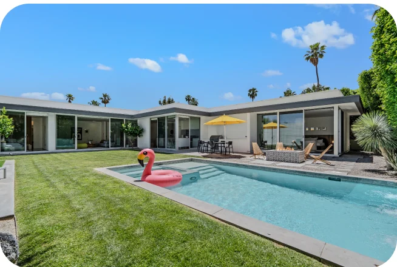
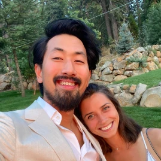